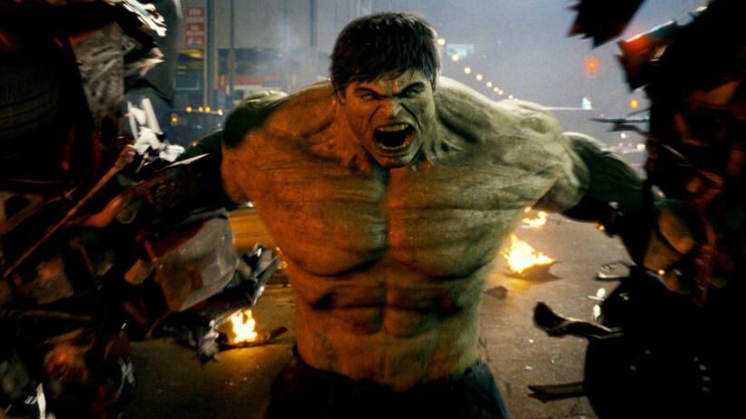

Nakładem wydawnictwa TM-Semic, w magazynie Mega Marvel, numer 6 (1/1995) ukazało się kilka przygód Hulka. Ponadto, wydawnictwo Mandragora wydało kilka miniserii o Hulku: Banner (scenariusz – Brian Azzarello, rysunki – Richard Corben, 2004), Hulk / Wolverine – 6 Godzin (scenariusz – Bruce Jones, rysunki – Scott Kolins, 2006) oraz Wolverine / Hulk (scenariusz i rysunki Sam Kieth, 2006).
